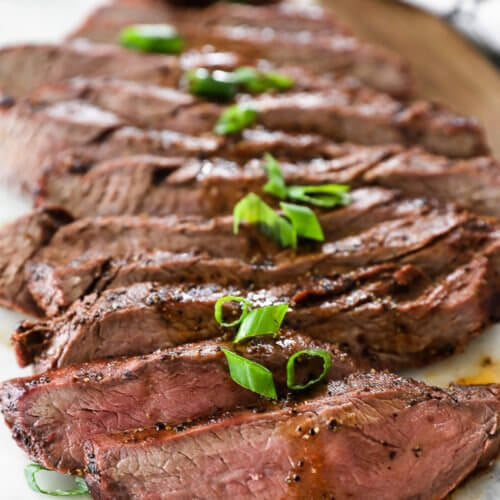

Soy Marinated London Broil

Description
This is a quick and easy dinner that uses a short marinade and simple ingredients. Serve over white or brown rice and pair with stir-fried broccoli.
Ingredients
- 1.5 lbs London broil
- 1/2 cup soy sauce
- 1/4 cup light brown sugar
- 1 clove garlic sliced thickly
- 8 scallions
- (optional) sesame seeds for serving
Instructions
- In a large skillet, stir together the soy sauce, brown sugar and garlic. Add the beef and turn to coat. Marinate for 20 minutes, flipping once.
- Remove meat and place on a broiler pan or foil-lined sheet. Reserve the marinade in the skillet. Season the meat with some freshly ground black pepper and then broil until medium rare, about 5 minutes per side.
- While the meat is cooking, set the skillet over high heat and boil the marinade for a few minutes to sterilize. Lower the heat to medium and add the scallions.
- Let the meat rest for 5-10 minutes, then slice thinly. Arrange over cooked rice and top with sauce and scallions. Top with sesame seeds if desired.